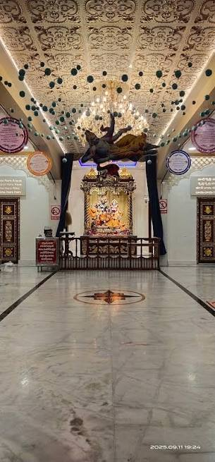

Prayer & Worship
Learn about devotional practices and take a quiet moment for reflection.

DEVOTION · PEACE · SPIRITUALITY
Step into a world of devotion, prayer and spiritual reflection at ISKCON Vijayawada.
Discover ISKCON ↓A SPIRITUAL EXPERIENCE
ISKCON stands for the International Society for Krishna Consciousness. Its spiritual traditions centre on devotion to Lord Krishna through prayer, devotional singing and teachings from ancient Indian scriptures.

INSIDE THE TEMPLE
ISKCON centres offer devotees a place to learn about Krishna consciousness and participate in spiritual activities. Depending on the centre's schedule, visitors may experience prayer, devotional music and religious celebrations.
The atmosphere invites visitors to slow down, observe local traditions and learn about a living spiritual community.
Find ISKCON on Google Maps ↗WHAT MAKES IT SPECIAL
Learn about devotional practices and take a quiet moment for reflection.
Some ISKCON centres host kirtan, the devotional singing of sacred names.
Discover teachings and traditions associated with Lord Krishna.
PLAN YOUR VISIT
Make your visit comfortable by checking local information before you travel.
Opening hours and worship schedules may vary. Confirm the latest details before visiting.
Choose modest clothing and follow the temple's visitor guidelines.
Follow photography rules, maintain cleanliness and be considerate during prayers.
Confirm the exact location and local travel options before setting out.